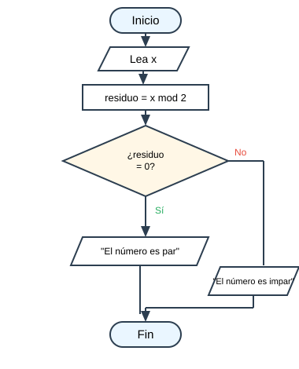
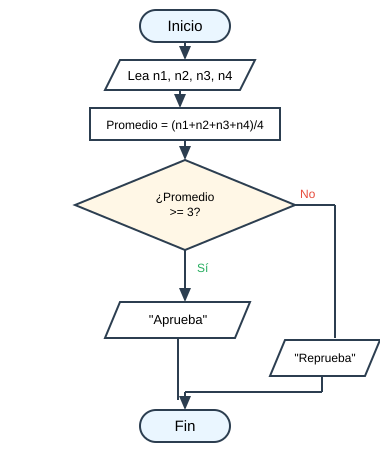

❓ Algoritmos Condicionales
El flujo se desvía dependiendo de las condiciones que se cumplan
¿Qué es un algoritmo condicional?
En un algoritmo condicional el flujo de la tarea no es secuencial: se desvía dependiendo de las condiciones que se cumplan. La decisión se representa con un rombo, del que salen dos caminos. Si la condición se cumple se sigue el camino "Sí"; si no se cumple, el camino "No". Esto se conoce como la estructura "Si / Entonces / Si no".
Par o impar
Leer un número entero y determinar si es par o impar.
Inicio { Lea x residuo = x mod 2 Si residuo = 0 entonces Imprimo "El número es par" Si no Imprimo "El número es impar" Fin si Fin }

Diagrama condicional: la decisión bifurca el flujo en par o impar.
Aprobación de materia
Calcular el promedio de 4 notas y determinar si el estudiante aprueba (mínimo 3.0).
Inicio { Lea n1, n2, n3, n4 Promedio = (n1+n2+n3+n4)/4 Si Promedio >= 3 entonces Imprime "Aprueba" Si no Imprime "Reprueba" Fin si Fin }

Diagrama condicional: aprueba si el promedio es mayor o igual a 3.